Project 3: Face Morphing
Janise Liang
Summary
In this project, we use a combination of shape warping and cross-dissolving to create morphs of two different faces. We control the warp by identifying "anchor" points, such as the corner of the eyes and mouth, and creating a triangular grid with these points. We then performed an affine transformation between the two differently-shaped triangles.
Stiching together a series of morphed images lets us create GIFs like the one on the right. If we select good anchor points, it ends up looking almost seamless.

Gosling-Reynolds morph
(see part 3)
Part 1: Point-matching and Triangulation
For each pair of images in the morph, I manually selected anchor points to define how the image shape is warped. Then, I calculate a Delauney triangulation on the midpoint of each point-pair. Calculating the triangulation only once ensures that both images have the same mappings.
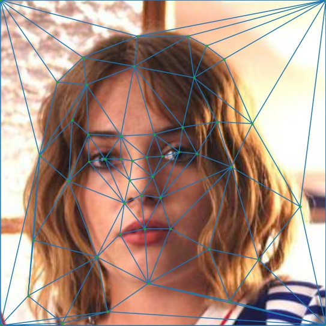
Robin, Delauney triangulation
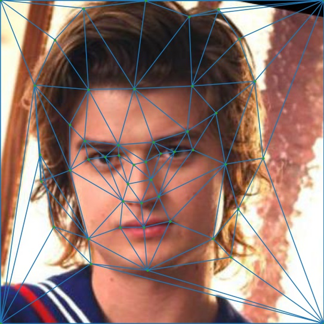
Steve, Delauney triangulation
Note: in addition to the manually selected points, I added anchors in each corner of the image. This guarantees that every pixel is located in a triangle.
Part 2: The "Mid-way Face"
To compute the midway face, I first find the midway shape using the midpoint of each image's corresponding anchor points. Then, we compute the affine transformation matrices from each image to the midway shape.
Since we want to find the midway face's pixel values by sampling instead of forward mapping, we calculate the inverse of the affine transformation. This allows us to map every pixel in the midway image to a location in the original image. When the pixel is mapped to a location between pixels, we use interpolation to guess at a value for the pixel.
Finally, we average the pixel values from warped images to create a single output image.
Ryan Reynolds
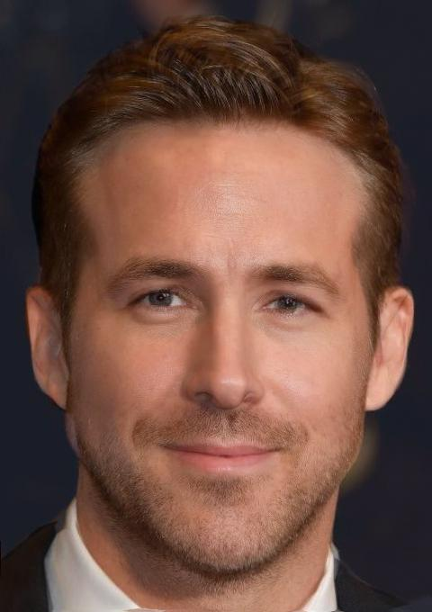
Ryan ?
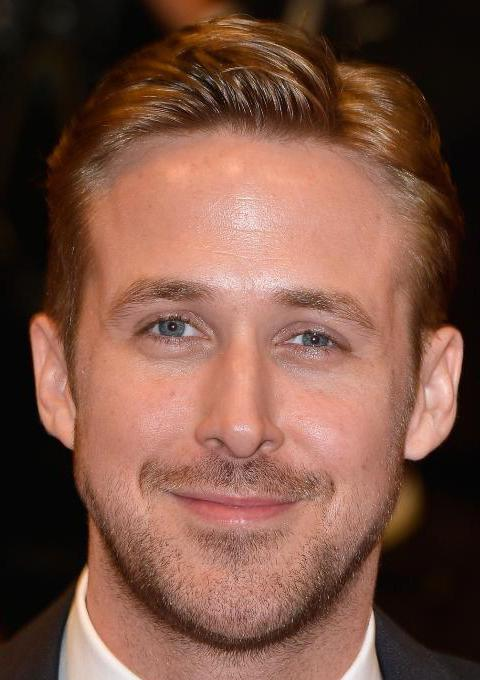
Ryan Gosling
Part 3: Morphing Sequence
We can modify the algorithm in part 2 to use a weighted mean for both the midway shape and average pixel brightness. Iterating over the weights from 0 to 1 produces a sequence of images that gradually transform from the first image to the second.
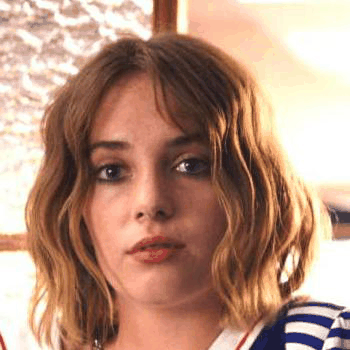
Note: Ryan and Ryan have relatively similar face shapes, so their morph turned out very well. On the other hand, Robin and Steve's extremely different hairstyles cause a bit ghosting, and there isn't really a way to merge the different backgrounds smoothly.
Part 4: Mean Face of a Population
Now, we apply the "mid-way face" concept to multiple images at once. I calculated the average shape over all neutral expression images in the Danish faces dataset, then warped each individual face into the average shape.
I noticed that the images of three people in the dataset were grayscale, while the rest were color images. However, the average face is still very colorful since the large number of colored photos smooths out the color.
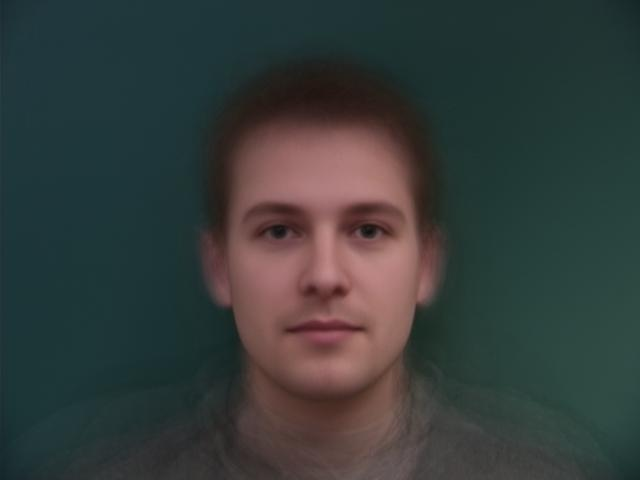
average neutral person
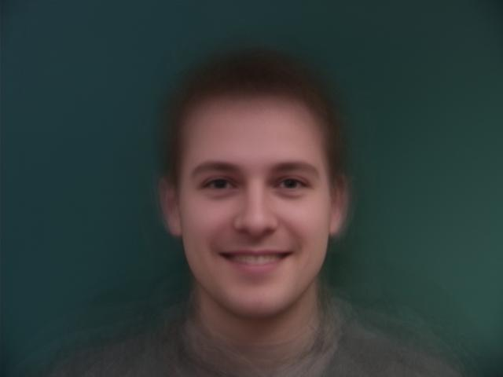
average smiling person
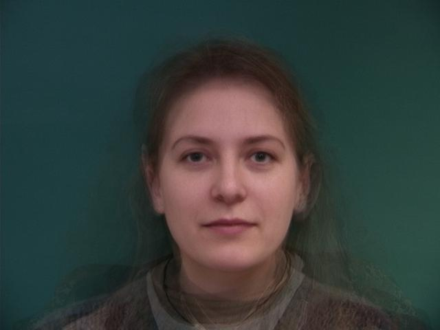
average neutral female
Note: There are only 7 females in this dataset, so the average female face has a lot more ghosting than the average of all faces.
I attempted to use the average face to create a color image out of the black and white faces. Since we have to take most of the pixel values from the colored mean face, this adds a lot of ghostly artifacts, but it does end up looking like a relatively realistic coloring of the face.
average neutral person
black and white neutral person
average face warped into individual
average neutral female

male individual
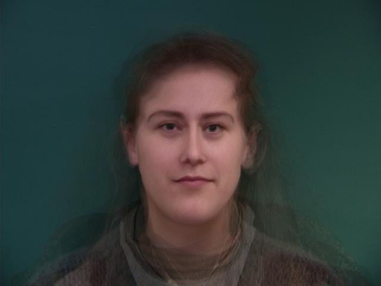
average female warped into male individual
Bells & Whistles
I also made an attempt to morph between a human face and a wolf. However, it was very hard to decide the point correspondences, so the morph sequence ended up looking a little bit silly.
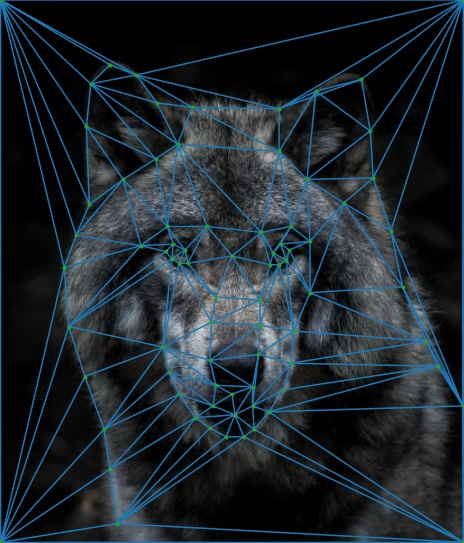
wolf triangulation
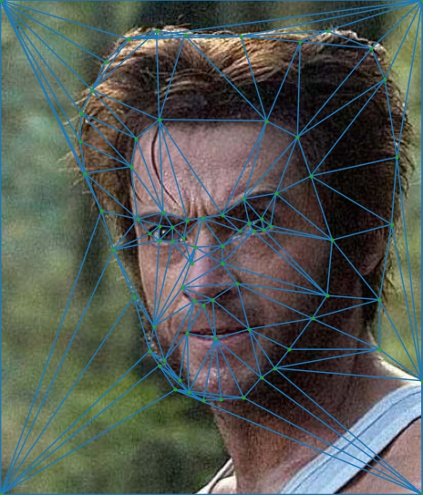
wolverine triangulation

wolferine morph